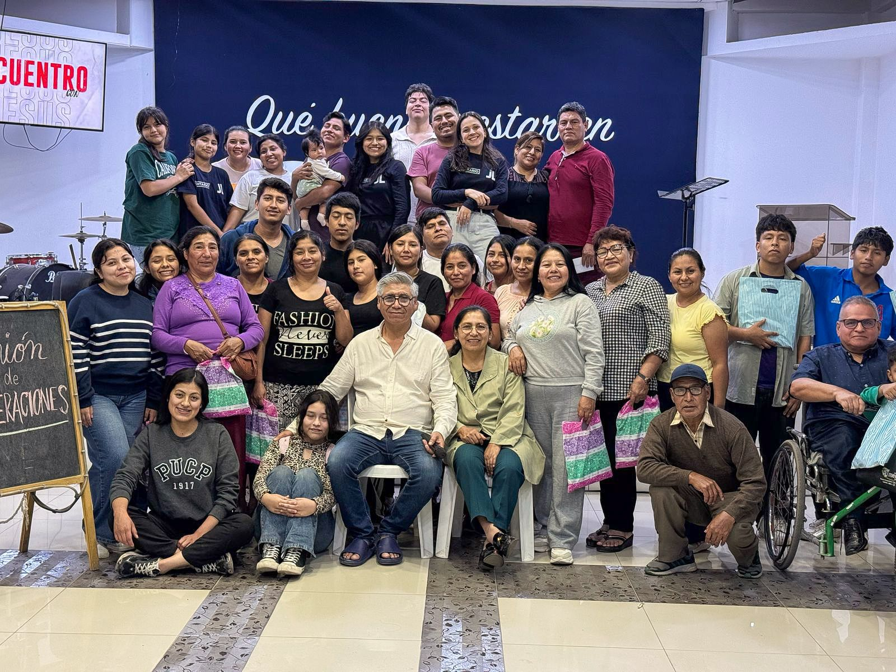
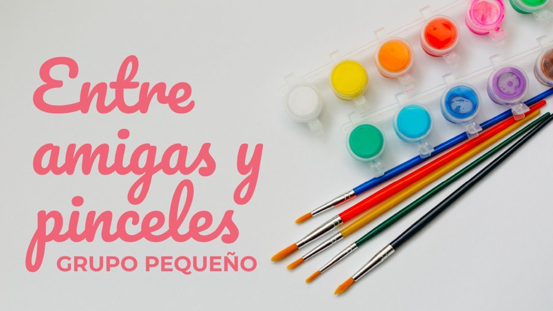
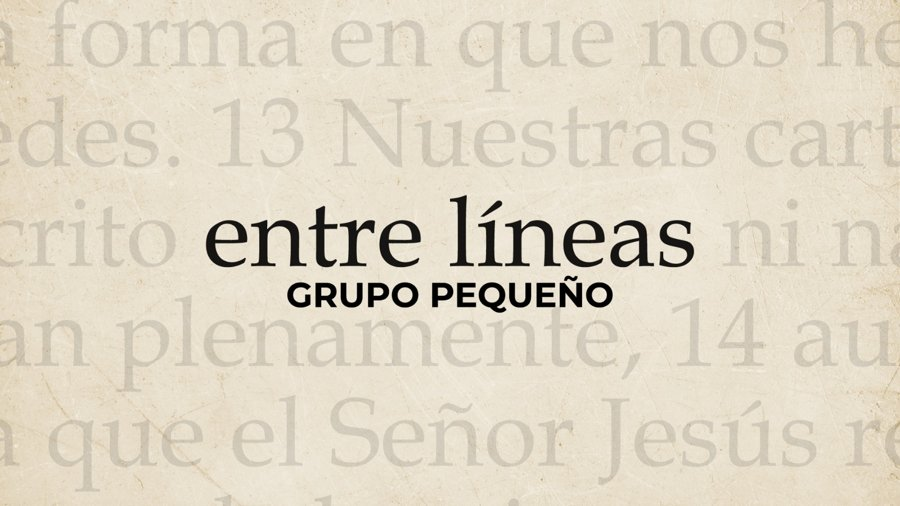
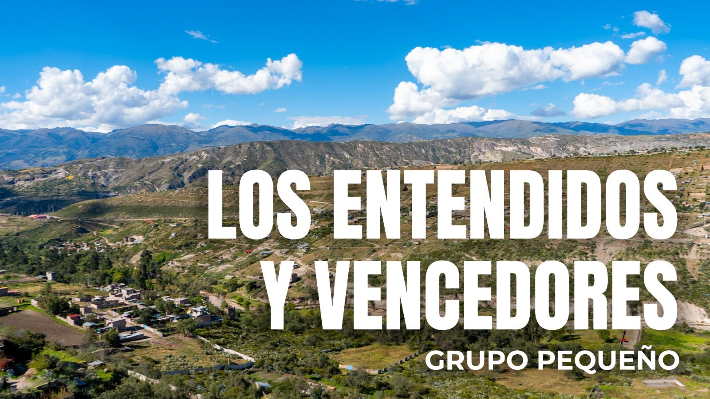
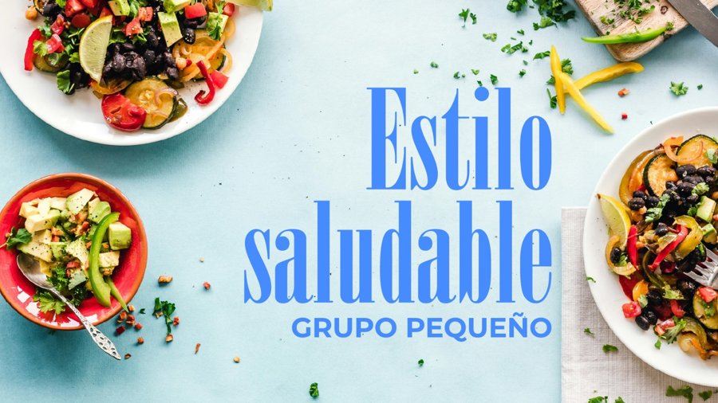
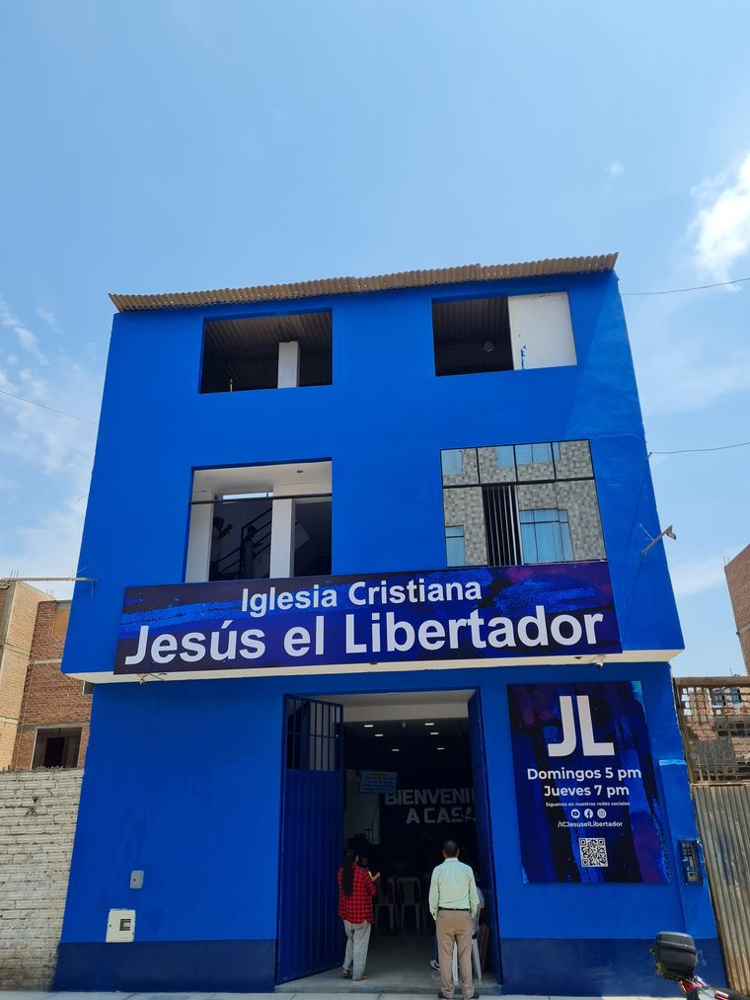
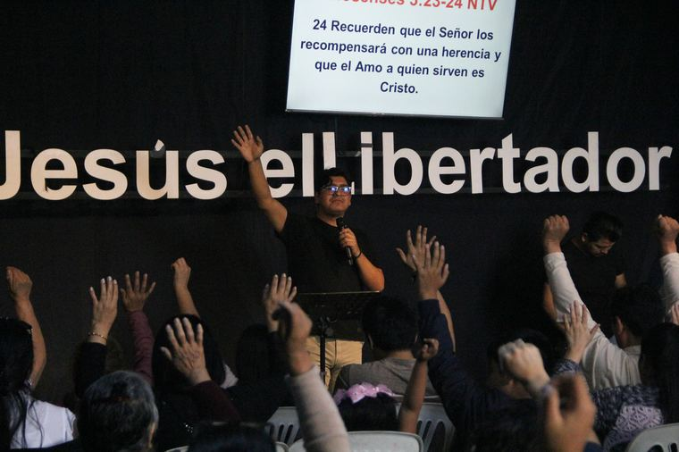

Un lugar más pequeño, más cercano, para crecer en comunidad. Elige el que va contigo.
Creemos que cada mujer tiene un sazón especial, uno con un toque celestial. En este grupo aprenderemos principios del arte culinario, pero, más allá de cocinar, creceremos para que nuestro testimonio refleje a Cristo y lleve el sabor del evangelio a nuestros hogares, a la iglesia y a nuestra comunidad.
Dirigido a mujeres que desean conocer más profundamente la Palabra de Dios mediante el estudio de mujeres poco conocidas de la Biblia. Descubriremos cómo Dios obró en sus vidas, las lecciones que podemos aplicar hoy y cómo crecer en fe, identidad y propósito en Cristo, con momentos de oración, compañerismo y apoyo mutuo.
Vamos a aprender sobre la importancia del valor del hombre en la sociedad, pasar un buen rato entre hombres y aprender habilidades útiles para la vida.
Siempre es bueno tener un lugar con amigos para relajarse, jugar, aprender, comer algo y conversar. Nos reunimos semanalmente para jugar PlayStation, aprender valores, habilidades y más. ¿Te unes?
Exploraremos juntos la segunda carta de Pablo a los corintios, descubriendo sus poderosas enseñanzas para fortalecer nuestra fe, formar nuestro carácter y crecer en nuestro caminar con Cristo de manera auténtica y transformadora.

Si te gusta el arte, pintar y el cuidado personal este grupo es para ti. Tendremos charlas de chicas, tips de makeup y, sobre todo, buena compañía.

¿Y si una sola historia pudiera cambiar tu forma de ver la vida? Vamos a explorar historias bíblicas que desafían, inspiran y nos acercan más a Dios. ¿Listo para descubrirla?
¿Tienes preguntas que pocas veces te atreves a hacer? Un espacio para mujeres donde conversaremos con confianza sobre temas como la higiene femenina, la sexualidad, la autoestima y muchos otros, aprendiendo juntas desde una perspectiva bíblica.

Nunca dejamos de aprender de Dios. Aquí encontrarás un lugar para crecer en la Palabra, compartir con nuevos amigos y recordar que cada etapa de la vida tiene un propósito en el Señor. ¡Anímate a ser parte!

Un espacio para aprender juntos a cuidar el cuerpo que Dios nos dio: alimentación, hábitos y bienestar, compartido en comunidad y con base bíblica.
Contacto por confirmar — escríbenos por redes mientras tanto.
Un curso que se recorre en orden, clase a clase, para profundizar en la gracia de Dios desde sus fundamentos. Por ser curricular, las inscripciones están cerradas por ahora mientras el grupo actual sigue en curso.
Escríbenos por redes para que te avisemos cuándo abre la próxima convocatoria.

Domingos · 5:00 pm

Domingos · 9:30 am y 11:30 am
Los grupos pequeños son espacios para crecer, compartir y caminar juntos. Si quieres ser parte de uno, inscríbete aquí.